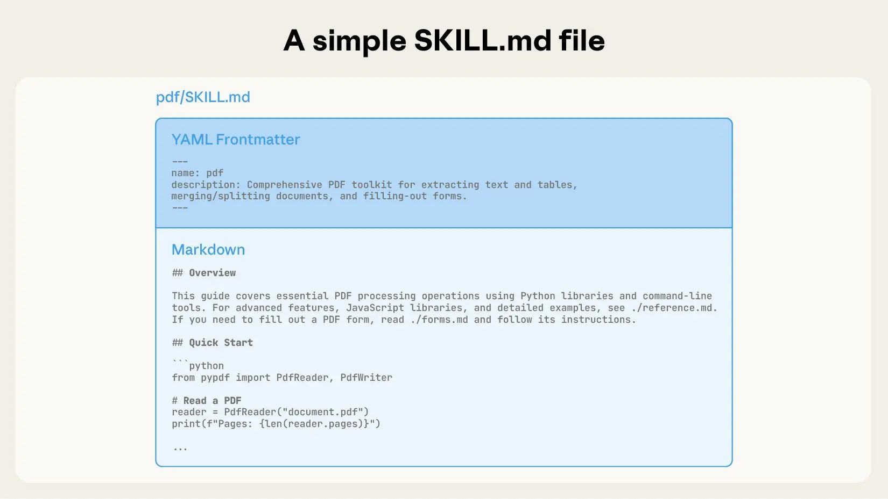
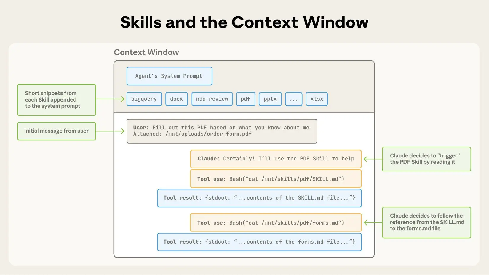
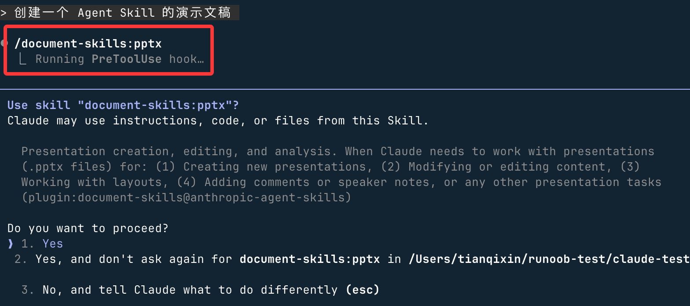
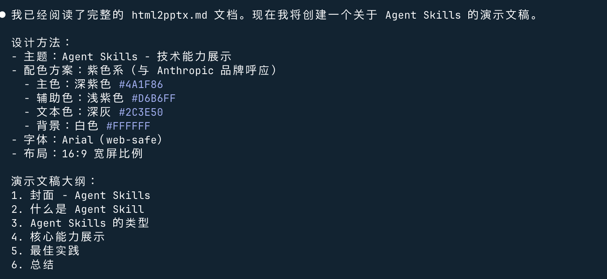

Agent Skills（エージェントスキル）
Agentはエージェント、Skillsはスキルを意味します。Agent Skills（エージェントスキル）は、専門知識やワークフロー規範を再利用可能な資産として固定化する中核ツールです。
Agent Skillsは本質的にモジュール式のMarkdownファイルであり、AIツール（Claude、GitHub Copilot、Cursorなど）に特定のタスクを実行させることを教えられ、自動トリガー、チーム共有、工学的管理をサポートし、繰り返しのプロンプト入力を完全に不要にします。
Agent Skillsの本質はツールではなく、次の通りです：
行動規範 + 専門知識 + 使用タイミングの組み合わせ
Skillsの基本内容の参考：Skillsチュートリアル
コア形式：
1つのSkillは1つのフォルダであり、その中にSKILL.mdファイル（説明とメタデータを含む）が必須で、他のリソースファイル（スクリプト、サンプル、参考ドキュメントなど）は任意です。
-
SkillはMarkdownファイル（SKILL.md）であり、特定のシナリオでClaudeにあなたのやり方で作業することを教えるために使われます。
本質は、AIエージェントに専門マニュアルを配布するようなものです。AIは毎回ゼロから学習するのではなく、タスクに応じてマニュアルの知識を自動的に呼び出します。
-
簡単に言えば、以前はプロンプトでAIに作業を教えていましたが、今はAgent Skillsを使ってプロンプト+リソースを再利用可能で共有可能なスキルパッケージにまとめることができ、より効率的で信頼性が高くなります。

Agent Skillsの仕組み
Agent Skillsの鍵はプログレッシブディスクロージャー（段階的開示）であり、3層に分けて読み込まれます：
- レベル1：スキル発見-- AIはまずすべてのスキルのメタデータ（nameとdescription）を読み取り、タスクに関連するかどうかを判断します。これらのメタデータは常にシステムプロンプトに含まれます。
- レベル2：コア命令の読み込み-- 関連する場合、AIは自動的にSKILL.mdの本文を読み取り、詳細なガイダンスを取得します。
- レベル3：リソースファイルの読み込み-- 必要な場合にのみ追加ファイル（スクリプト、サンプルなど）を読み取るか、ツールを介してスクリプトを実行します。
対応ツールと環境
現在主にサポートされているもの：
- Claude（Anthropic）：Claude.ai、Claude Code、Agent SDK。
- VS Code + GitHub Copilot：プロジェクトレベル（.github/skills/）または個人レベルのスキル。
- Cursor：プロジェクトレベル（.cursor/skills/）またはグローバルスキル。GitHubからのインストールをサポート。
- その他：拡張中です。標準のオープンソースはhttps://github.com/agentskills/agentskills。
なぜSkillsが必要なのか？どのような問題を解決するのか？
通常のAIエージェント（ClaudeやCopilotなど）は非常に賢いですが、特定のコンテキストが欠けているとエラーが発生しやすくなります。例：
- チームには独自のコード規範があるが、AIに毎回手動でリマインドする必要がある。
- PDFフォームの処理やGitHub Actionsのデバッグなどの複雑なフローでは、AIがベストプラクティスを知らない可能性がある。
Agent Skillsはこれらの問題を解決します：
- 自動トリガー：AIがタスクに応じて関連スキルを自動的に読み込み、長いプロンプトを手動で入力する必要がありません。
- 再利用可能＆共有可能：一度作成すれば、チーム全体やコミュニティで使用でき、Gitバージョン管理をサポート。
- コンテキストの効率的な活用：プログレッシブディスクロージャー（段階的開示）を採用し、必要な部分だけを読み込むことで、コンテキストウィンドウのオーバーフローを防ぎます。
- クロスプラットフォーム：同じSkillをClaude、VS Code Copilot、Cursorなどのツールで使用できます。
コア概念をすばやく理解
| 概念 | たとえ | 機能 |
|---|---|---|
| Skill（スキル） | 独立したスイスアーミーナイフのツール、または料理のレシピ | 特定のタスク（メール作成、データ分析など）を完了するための完全な一式。 |
| Instruction（指示） | ツールの取扱説明書、またはレシピの手順 | Claudeに具体的に何をすべきか、どう考えるか、どのような形式で出力するかを伝えます。 |
| Knowledge（知識） | ツールの部品リスト、またはレシピの食材の背景資料 | ファイル（製品マニュアル、APIドキュメントなど）をアップロードして、Skill専用の知識ベースとして使います。 |
| Tool（ツール） | ツールの特殊なアタッチメント（例：栓抜き） | Skillが呼び出せる外部APIや関数を定義し、データの取得や操作の実行に使用します。 |
Skillの実行フロー
ユーザー指令から始まり、まずSkillの意図認識を行い、制御された実行パスに入るかどうかを決定します。
Skillにヒットすると、システムはSKILL.mdを読み込み、ツール権限と行動境界を確立し、コンテキストと組み合わせて推論を行います。
本当に必要な場合にのみ許可された外部ツールを呼び出し、それ以外はルール内でロジックを完結させます。
最終結果は制約を統合した後に出力され、ユーザーの次の入力が新たな完全なフローをトリガーします。

Skillの最小構成
my-skill/ └── SKILL.md （唯一必需）
SKILL.md基本テンプレート：
--- name: your-skill-name description: What it does and when Claude should use it --- # Skill Title ## Instructions Clear, concrete, actionable rules. ## Examples - Example usage 1 - Example usage 2 ## Guidelines - Guideline 1 - Guideline 2
メタデータフィールド：
| フィールド | 必須 | 説明 |
|---|---|---|
| name | 否 | Skillの表示名。デフォルトではディレクトリ名を使用。小文字、数字、ハイフンのみサポート（最大64文字） |
| description | 推奨 | スキルの用途と使用シナリオ。Claudeはこれに基づいて自動適用を判断します |
| argument-hint | 否 | 自動補完時に表示されるパラメータのヒント。例：[issue-number]、[filename] [format] |
| disable-model-invocation | 否 | に設定trueClaudeの自動トリガーを禁止し、手動のみ可能/name呼び出し（デフォルトはfalse） |
| user-invocable | 否 | に設定falseから/メニューで非表示にし、バックグラウンドの拡張機能として使用（デフォルトはtrue） |
| allowed-tools | 否 | SkillがアクティブなときにClaudeが許可なしで使用できるツール |
| model | 否 | Skillがアクティブなときに使用するモデル |
| context | 否 | に設定fork場合、サブエージェントコンテキストで実行 |
| agent | 否 | サブエージェントタイプ（context: forkと組み合わせて使用） |
| hooks | 否 | スキルライフサイクルフックの設定 |
Skillsはコンテンツ内に動的変数を挿入できます：
| 変数 | 説明 |
|---|---|
$ARGUMENTS |
Skill呼び出し時に渡されるすべてのパラメータ |
$ARGUMENTS[N] |
インデックスでパラメータにアクセス。例：$ARGUMENTS[0] |
$N |
簡易表記。例：$0最初のパラメータを表します |
${CLAUDE_SESSION_ID} |
現在のセッションID。ログ、一時ファイル、関連出力に使用 |
例：
---
name: session-logger
description: 记录当前会话活动
---
请将以下内容写入日志文件：
logs/${CLAUDE_SESSION_ID}.log
$ARGUMENTS
呼び出し：
/session-logger 用户登录成功
実際にはセッション専用のログ記録が生成されます。
SKILL.mdファイルの核心構成
ClaudeのPDFドキュメント編集スキルを例にとると、ClaudeはPDFをネイティブに解析できますが、直接操作（フォームへの記入など）はできません。このスキルがその欠点を補います。
- コア形態：SKILL.mdを含むディレクトリ
- 必須メタデータ：SKILL.mdの先頭にあるYAMLブロック。name（名前）とdescription（説明）を含める必要があり、起動時にシステムプロンプトへ事前に読み込まれます

複数ファイルのSkill（プログレッシブディスクロージャー）
プログレッシブディスクロージャーの仕組み
- 第1層：メタデータ → Claudeにスキルの適用シナリオを判断させ、すべてのコンテンツを読み込まない
- 第2層：SKILL.md本文 → 関連性を判定後、完全なコンテキストを読み込む
- 第3層以降：付属ファイル（forms.mdなど）→ 必要に応じて参照し、コアファイルのサイズを削減
次の図は、ユーザーメッセージがスキルをトリガーしたときにコンテキストウィンドウがどのように変化するかを示しています：

- 初期状態：コンテキストウィンドウにはシステムプロンプト、スキルメタデータ、ユーザー指令が含まれます
- Bashツールを呼び出して対象のSKILL.mdを読み取り、対応するスキルをトリガーします
- 付属ファイルのオンデマンド読み込み（forms.md など）
- 読み込み完了後にユーザータスクを実行
推奨ディレクトリ構造
コンテキストの肥大化を避けるため：
- コアルール →
SKILL.md - 詳細資料 → 別ファイル
- 実用ロジック → スクリプト実行（読み込まない）
推奨構造：
my-skill/
├── SKILL.md
├── reference.md
├── examples.md # 存放示例文件
└── scripts/
└── helper.py
最初のSkill
複雑な作成プロセスはひとまず忘れて、まずは既製の Skill を使用して始め、その便利さを体感しましょう。
Skillディレクトリの作成
Skills は~/.claude/skills/（個人用グローバル）またはプロジェクトディレクトリ配下の.claude/skills/（プロジェクト専用）に配置します。
この章ではプロジェクトディレクトリ配下でテストします。まずディレクトリ claude-test を作成します：
mkdir claude-test
そのディレクトリに入り、skills ディレクトリとファイルを作成します：
mkdir -p .claude/skills/python-naming-standard
設定ファイルSKILL.mdの作成
ディレクトリ内に SKILL.md を作成します。これは Skill の頭脳であり、Claude にいつ使用するかを伝えます。
--- name: Python 内部命名规范技能 description: 当用户要求重构、审查或编写 Python 代码时，请参考此规范。 --- ## 指令 1. 所有的内部辅助函数必须以 `_internal_` 前缀命名。 2. 如果发现不符合此规则的代码，请自动提出修改建议。 3. 在执行 `claude commit` 前，必须检查此规范。 ## 参考示例 - 正确：`def _internal_calculate_risk():` - 错误：`def _calculate_risk():`
フィールド要件：
- name：小文字・数字・ハイフンのみ使用可能（最大 64 文字）
- description：Skill の簡単な説明と使用タイミング（最大 1024 文字）
作成後のファイル構造は以下の通りです：

プロジェクトは今このようになっているはずです：
my-project/ ├─ src/ │ └─ test.py # 项目源码 ├─ .claude/ │ ├─ skills/ │ │ └─ hello-world/ │ │ ├─ skill.md # Skill 定义（YAML + Instructions，机器可执行） │ │ └─ README.md # Skill 说明（人类阅读，可选） │ └─ config.yml # Claude 项目级配置（可选） ├─ .gitignore └─ README.md # 项目整体说明
次にターミナルで以下のコマンドを実行して Claude Code を起動します：
claude
タスクを入力：
ユーザーの割引を計算する関数を書いてください
Claude はインストール済みの Skills をスキャンし、リクエストが「Python コード作成」に関連していることを検出して、python-naming-standard がマッチします。

それは SKILL.md の要件に基づいて、以下のコードを生成します：
def _internal_get_discount(user_score):
# 计算逻辑...
return discount
リソースファイルの追加（オプション）
さらに.claude/skills/配下に以下のディレクトリを追加できます：
同じフォルダに以下を追加：
examples/：サンプルファイルを格納します。references/：参照ドキュメントを格納します。scripts/：実行可能スクリプトを格納します（例：PDF を処理する Python）。
その後、SKILL.md 内で参照します：
查看示例 commit：./examples/good-commit.txt 运行脚本：使用工具执行 ./scripts/process.py
公式マーケットプレイス
自分で作成するだけでなく、2025 年末に公開された Agent Skills オープン標準も利用できます：
- 公式マーケット：アクセスhttps://github.com/anthropics/skillsリポジトリからプリセットスキルをダウンロード（例：React オプティマイザー、SQL チューニングツール）。
- Skill Creator：「先ほど教えた Docker の設定ロジックを 1 つの Skill にまとめて」と Claude に伝えるだけで、対応するディレクトリにファイルを自動作成します。
このリポジトリを Claude Code のプラグインマーケットとして登録できます。Claude Code で以下のコマンドを実行するだけです：
/plugin marketplace add anthropics/skills

その後、/plugin を使用して表示できます：

指定のスキルセットをインストールする手順：
- プラグインを参照してインストール（Browse and install plugins）
-
anthropic-agent-skills プラグインソースを選択
document-skills（ドキュメントスキル）または example-skills（サンプルスキル）を選択

-
「今すぐインストール（Install now）」をクリック

上記 2 種類のプラグインはコマンドで直接インストールすることもできます：
/plugin install document-skills@anthropic-agent-skills /plugin install example-skills@anthropic-agent-skills
注意：プラグインでインストールされた skills ディレクトリは～/claude/plugins/marketplaces/配下にあります。
プラグインのインストールが完了したら、Claude Code を再起動する必要があります。
使用時は、指示にスキル名を記載するだけで呼び出せます。例えば、document-skills プラグインをインストール後、Claude Code に以下の指示を出せます：
使用 PDF 技能提取 path/to/some-file.pdf 文件中的表单字段
または PPT を作成：
创建一个 Agent Skill 的演示文稿
ご覧のとおり、/document-skills:pptx：

が呼び出されて生成が開始されます：

その後、生成されたファイルの場所が通知されます：
Agent Skills関連リソースのまとめ
| リソース説明 | リンク |
|---|---|
| Skill 集約エントリ | https://skills.sh/ |
| Skills マーケット（中国語インターフェース） | https://skillsmp.com/zh |
| Agent Skills 公式標準サイト | https://agentskills.io |
| Anthropic 公式エンジニアリング記事（Agent Skills 実践の考え方） | https://www.anthropic.com/engineering/equipping-agents-for-the-real-world-with-agent-skills |
| VS Code Copilot Agent Skills ドキュメント | https://code.visualstudio.com/docs/copilot/customization/agent-skills |
| Anthropic 公式 Skills GitHub リポジトリ | https://github.com/anthropics/skills |
| Claude スキル厳選リスト（Awesome シリーズ） | https://github.com/ComposioHQ/awesome-claude-skills |
| ソフトウェア開発自動化ワークフロー Skills コレクション | https://github.com/obra/superpowers |
| Skill を自動生成する Skill（公式サンプル） | https://github.com/anthropics/skills/tree/main/skills/skill-creator |